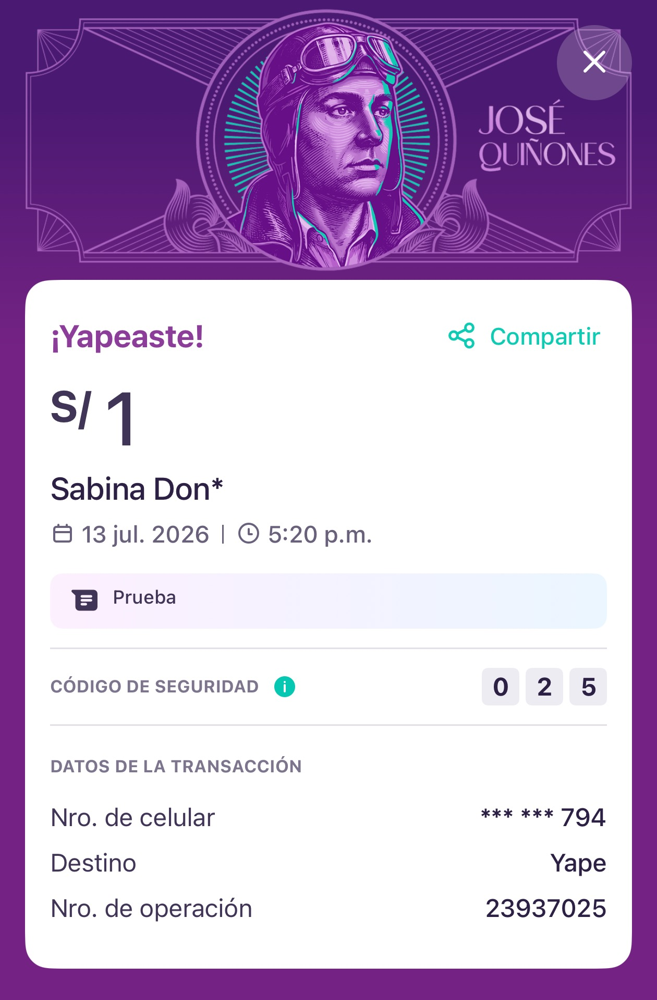

Everyone's wallet
Cash still matters in Peru, but its share fell sharply as fast payments took over daily commerce, led by Yape and its interbank rival Plin.
Trust & Verify lets a merchant check that a Yape payment on a customer's screen is real, before the goods leave the counter.
A queue at a market stall: a customer shows a screenshot saying the payment went through, and the merchant has seconds to accept. Every field on the confirmation can be faked except the operation number, and the app checks it, here against mock records rather than a live bank, before the goods leave. A secure keypad with randomized digits, double-click prevention and private-data protection guard the interface. Researched, designed and built in under a week, in a stack I had never used.
Yape began as a way to send money to a phone number. Today much of Peru pays with it daily.
It stopped being a transfer app long ago: credit, bill payments, a marketplace and remittances. A super app.
Its success created a new fraud: if everyone trusts the confirmation screen, fake the screen.
Cash still matters in Peru, but its share fell sharply as fast payments took over daily commerce, led by Yape and its interbank rival Plin.
A market stall or bodega: the customer shows a confirmation, the queue waits, and the merchant has seconds to decide.
The most exposed are those financial inclusion meant to serve: small merchants and independent workers, for whom one fake payment can erase a day's earnings.
A payment confirmation, on a phone, held up at your counter —
an image, where every field is text that can be forged.
The fake reproduces exactly what you are looking at. That is why staring harder fails.
Peru's wallet boom outran its trust infrastructure, and the fake receipt is the hole it left.
A security code shipped to close it. The public guidance still does not mention the code.
I benchmarked three innovation-centre banks in markets like Peru: Nubank, Nequi and Attijariwafa. All three treat verifiable payment trust as core product, so the gap is real. Merchant finance tools were a crowded space and onboarding drifts into regulated identity; payment trust won because it is urgent and solvable in front-end alone.

With the exact design system I could build or redesign the whole app, but that isn't the purpose. This case solves one real fraud problem with front-end alone, with every framework, security and code decision understood and backed by me.
I read the front-end requirements Peru's largest bank hires for, mapped them against my skills and aimed this project at the gap.
I left the vanilla web this site is built on and entered frameworks and app development, to test first-hand what I can build.
Reshaping a successful super app takes years. I chose to learn what solving one banking problem with front-end really takes.
The five phases and their tasks are reconstructed from this build's plan and completion record. Story points measure relative effort between phases, not a recorded sprint. Hours are planned-capacity estimates, off by default. There is no progress percentage: a finished build has nothing left to forecast.
The four technology decisions behind the build.
React draws every screen from the app's data, never the reverse, so what the merchant sees always matches what the app knows. In a trust tool, that guarantee is the product.
The one failure a verification tool can't survive is a stale screen showing "verified" for a cancelled check. In React the interface is a function of state, so a verdict can't tear under rapid updates. Vanilla would mean hand-wiring every listener, and this build's one real defect was a missed listener. Angular would work, but adds a large framework to a single-job build.
TypeScript is JavaScript with a strict proofreader: it catches whole classes of errors before the code runs. In a tool that tells a merchant to trust a payment, that net isn't optional.
Every receipt field, verdict state, and API response has a declared shape, so a malformed record cannot silently flow into a verdict. The compiler runs as a CI gate on every push — the same discipline production banking code expects: typed contracts, automated checks, continuous integration.
The security layer works like a film set: the heavy bank infrastructure is openly staged scenery, while every lock the merchant touches is real, working and tested.
The scenery shows the sector's security vocabulary (TLS 1.2, RSA-2048 key pairs, mutual certificate authentication, adaptive risk scoring) on fabricated material, badged SIMULATED throughout. The lock is what the merchant touches: an in-app keypad no third-party keyboard can read, shuffling digits, an execution lock, a blocking overlay and privacy masking.
Before trusting the build, I wrote a six-scenario test protocol from the case research: does it tell a fake from a real payment, and does it avoid misfiring under pressure?
1: a forged amount on a real operation number is caught and named. 2: an unreadable security code never counts as a mismatch. 3: a double-tap or mid-flight cancel never fires the check twice. 4: the action stays inert until its preconditions hold. 5: the busy overlay truly blocks the page. 6: privacy masking never leaks a full name or number.
Of the five fields on a receipt, four — amount, recipient, date, even the security code — are text whoever makes the image can set. Only the operation number is written by the bank's own record. The security code looks like proof and ships on every receipt; it is text on the same image. Treating it as proof is the trap the tool exists to close.
For more, access the repository.
Compare what was measured with what it means.
The fastest artifact in this portfolio is also its most technical. That inversion is the finding.
What transfers: any stack a client's problem requires is now within reach, with every decision owned and every claim checkable.
Method — figures counted from the repository and the recorded test run (Node 24.18.0, Vitest 3.2.7, TypeScript 5.9.3, 15 Jul 2026), verifiable at the linked source. Staged security demonstrations are described, and badged, in The Architecture above.
Four lessons this build left behind.
I thought app development belonged to career developers. This build broke that ceiling: I now work the technical side while owning every strategic call, starting with the stack.
My fastest portfolio artifact yet, without typing a line of code and without vibe-coding shortcuts. Every framework, security and code decision was directed, reviewed and understood by me.
Gemini compiled fifteen app screenshots into one master flow file. Claude Code ran deployment prompts I wrote as reusable skills, each run directed, reviewed and mine.
Banking is too wide to enter everywhere at once. A short study aimed at one real fraud mechanism, seen purely through front-end eyes, not as UX, redesign or innovation theatre.
The gap I did not close: this app checks a fabricated record. The same check, against a bank's real one, is a backend conversation.
Disclosure notes
An independent case study. Not affiliated with, endorsed by, or connected to Yape or BCP. Built against fabricated fixtures. No real payment, account, or ledger is involved.